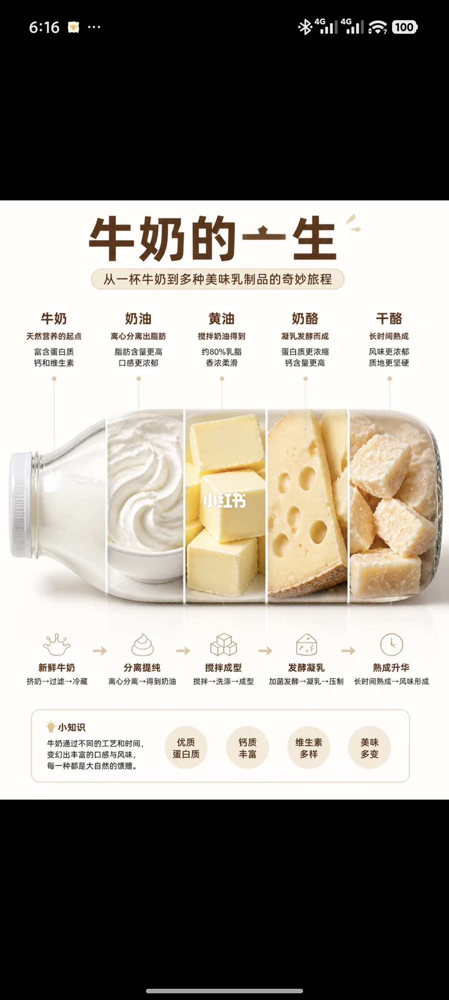

1/1
一只瓶子里的五段奶制品

图题是「牛奶的一生」，副题是从一杯牛奶到多种乳制品。画面中央一只横放的玻璃瓶分成五段。第一段是牛奶，写成天然营养的起点，富含蛋白质、钙和维生素。第二段是奶油，离心分离出脂肪，脂肪更高、口感更浓。第三段是黄油，由搅拌奶油得到，约 80% 乳脂，香浓柔滑。第四段是奶酪，凝乳发酵而成，蛋白质更浓缩，钙含量更高。第五段是干酪，长时间熟成，风味更浓、质地更硬。奶酪画成带孔的黄色楔块，干酪画成白色硬块。
瓶子下面五个箭头把工序说完整。新鲜牛奶：挤奶、过滤、冷藏。分离提纯：离心分离，得到奶油。搅拌成型：搅拌、洗涤、成型，对应黄油。发酵凝乳：加菌发酵、凝乳、压制，对应奶酪。熟成：长时间熟成，风味形成，对应干酪。页底「小知识」说牛奶靠不同工艺和时间变出口感和风味。四枚徽章写着优质蛋白质、钙质丰富、维生素多样、美味多变，都没有含量数字。
边界
这是一条示意顺序，没有工艺参数
图把牛奶到干酪排成一条单向升级。奶油和黄油确实接在分脂、搅拌之后；奶酪则从奶或脱脂之后的凝乳走另一条发酵路线，图用箭头把它们画成前后相继。日常说法里奶酪和干酪经常指同一类食物，这一页把它们拆成「发酵凝乳」和「长时间熟成」两段，没有给出菌种、温度、盐、时间和含水量。
唯一的数字是黄油「约 80% 乳脂」。蛋白质、钙、维生素都是徽章上的定性说法。作者账号写的是工厂直销，这张图没有标出具体产品或检测报告。